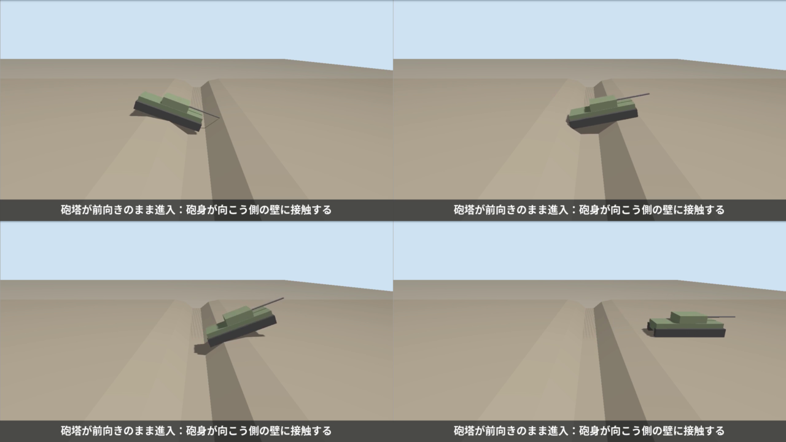

重量装軌車両の不整地走行を模倣学習（ACT）で再現する
― 突堤と壕の通過：飛びを抑えつつ、速度を保つ ―
Physical AI 応用編1 最終課題 ／ Ignition Gazebo ＋ ROS 2 Humble ＋ LeRobot（ACT） ／ 第 2 版（44 t 級・最高 80 km/h）
1. 概要と目的
車両の無人化・自律化は、建設、災害対応、探査など、さまざまな分野で求められている。自動運転技術は進展しているが、道路を想定したものが中心で、
不整地を走る車両にそのまま適用することは難しい。不整地では、地形に応じて速度を切り替える操縦の技能が重要になる。
特に車両が重いと、段差や溝の縁で車体が宙に浮く（「飛ぶ」）だけで、着地の衝撃が故障の原因になる。
かといって、衝撃を避けてずっとゆっくり走るのでは、作業の効率や、危険な場所に留まる時間の点で不利である。
通過の瞬間は速度を抑えて衝撃を和らげ、それ以外では速度を出すという操縦が求められる。
本課題では、Ignition Gazebo 上に砲塔付きの装軌車両（多輪スキッドステアで履帯を模擬）を自作し、操縦経験のある人のテレオペのデモから、
ACT（Action Chunking with Transformers）でこの技能を学習させた。地形は 2 つである。
- 突堤（台形の山）：速く越えると頂上で車体が跳ねる。
- 壕（深い溝）：入るときと出るときに車体が飛ぶ。さらに、砲塔が前向きのまま進入すると砲身が向こう側の壁に当たる。
第 1 版は小型の車両（約 445 kg、最高 4 m/s）で、突堤と壕の両方で模倣学習が成立することを確認した。
今回の第 2 版では、車両を 44 t 級の重量車両に作り替え、最高速度を 80 km/h、加速と減速に制限を設け、地形も車両の大きさに合わせて作り直した。
さらに、観測を拡張し（鉛直速度、ロール角など）、前方カメラの画像も試した。学習は GPU で行った。
結果の要約
- 突堤：ACT は 10 試行すべてで跳ねずに通過した。所要時間は人のデモと同等（14.1〜14.5 秒対 14.9 秒）で、一定の中速（0.5）より速く、衝撃も小さい（2.3〜2.4 m/s 対 2.7 m/s）。全開は 0/10（跳ねる）。
ただし、この突堤は一定の中速でも通れる易しい課題だった。
- 壕：砲塔の操作を学習から外し、最初から 90° にして学習すると、砲身が壁に当たることは 10/10 で解消し、所要時間も人のデモより短い（17.5 秒対 21.5 秒）。
一方、壕に入るときの減速が人より浅く、「飛ばずに通過」は 2/10 にとどまった。速度と飛びの両立は、壕では未達である。
- 前方カメラの画像を加えた学習は、10 本のデータでは不安定だった（壕の手前の減速を再現しないことがあった）。
- 失敗の原因を、データと入力の値から切り分けた（第 6 章）。特に、学習データの「ばらつきが 0 の次元」が方策を壊すことなど、実用上の教訓が得られた。
2. システム構成
__DIAGRAM__
図1 システム構成（第 1 版と同じ構成。第 2 版では、観測の拡張と画像の入力を加えた）。車両・地形・操縦系・観測系・評価ツールはすべて自作。
車両モデル（自作・架空のパラメータ）
- 公開されている重量車両の概数に合わせた架空のモデル。総質量 44 t（車体 28.5 t、砲塔 8.5 t、砲身 2.2 t、車輪 16 個で 4.8 t）、車体 7.4×2.6×1.0 m、砲身 5.28 m（全長 約 9.4 m）。
慣性は形状と質量から計算する生成スクリプトで作る。
- 片側 8 輪（半径 0.45 m、間隔 0.95 m、接地長 6.65 m）を DiffDrive に登録して、スキッドステアでその場の旋回もできる。
履帯は見た目用の箱で、衝突判定は車輪が担当する。
- 動力特性（仮定の値）：最高速度 80 km/h（前進）・40 km/h（後退）、加速 1.5 m/s²（0 から 80 km/h まで約 15 秒）、減速 3.5 m/s²（80 km/h から約 70 m）、旋回 1.0 rad/s。
DiffDrive の速度・加速度の制限として実装し、測定で確認した。
- 砲塔は鉛直軸の関節（JointPositionController）で回す。砲身にも衝突判定を付け、砲身が壁に当たったことを接触センサーで検出する。
 図2 第 1 版（左の小さい車両）と第 2 版（右）の大きさの比較。
図2 第 1 版（左の小さい車両）と第 2 版（右）の大きさの比較。
地形（車両の大きさに合わせて作り直し）
- 突堤：高さ 1.5 m、斜面 20°、頂上の平らな部分 6 m、頂上の縁に面取り。助走 100 m（加速 1.5 m/s² で 70 km/h 以上が出せる長さ）。
- 壕：上端の幅 11 m、深さ 2.2 m、壁 40°、縁に長さ 2.5 m の緩い面取り。助走 100 m。幅は砲身の長さ（車体の前端から約 2 m 突き出る）と合わせ、砲塔が前向きだと砲身が壁に当たり、90° にすれば当たらない関係にした。
- 寸法は、一定のスロットルで走らせて、着地の衝撃や接触を測りながら決めた（第 6 章）。
操縦系・観測
- 行動
[throttle, steering, turret_angle]（アクセル −1〜1、ハンドル、砲塔角）。teleop と方策は同じトピックに配信するので、差し替えて使える。
テレオペのスロットルは、細かい刻み（0.05、約 4 km/h）と大きい刻み（0.25）を使える。
- 観測（8 次元）
[x, z, pitch, v_forward, turret_angle, vz, roll, throttle_cmd]：真値の位置（x, z）、IMU のピッチ角とロール角、車輪オドメトリの前進速度、砲塔角、
鉛直速度 vz（真値の z を差分）、直前のスロットル指令。第 1 版の 5 次元に、vz・roll・throttle_cmd を足した。
実際の車両の速度を観測に使い、スロットルの目標値は行動側にある。
- 前方カメラ（160×120、10 Hz）：車体の前端から前方を見る。画像を加えても、シミュレーションの速度はほとんど落ちなかった（実時間比 0.88 → 0.83）。
 図3 前方カメラの画像の例（スタート地点）。
図3 前方カメラの画像の例（スタート地点）。
3. 学習と評価の方法
| 突堤 | 壕 |
|---|
| デモ | 操縦経験者のテレオペ 10 エピソード | 同 10 エピソード（砲塔は最初から 90°。壕の手前で段階的に減速し、縁でほぼ停止してから進入） |
| データ | 1672 フレーム（fps 10） | 2487 フレーム（fps 10） |
| 学習 | ACT（chunk 16、バッチ 8、5000 ステップ）、GPU（RTX 4060）で約 3〜5 分 |
| 推論 | シミュレーション時刻の 10 Hz、行動チャンクを 8 ステップ実行 |
評価の指標：着地衝撃
「飛び」を、真値の鉛直速度の、0.1 秒間の変化の最大値（着地衝撃 [m/s]）で測る。同じ条件で繰り返すと、ほぼ同じ値になる（突堤を全開で通すと 3.6〜3.9 m/s、スロットル 0.2 で 1.2 m/s）。
3.0 m/s 未満（落下の高さにして約 0.46 m 相当）を「跳ねずに通過」とした。IMU の加速度を使った空中時間や最大値は、長い車体が縁で前のめりになるだけでも反応し、値が 1〜500 G とばらついたので使わなかった（第 6 章）。
壕では、砲身の接触センサーが 0 件（接触なし）も条件に加え、入るときと出るときの衝撃をそれぞれ測る。
評価は、操縦者の画面のシミュレーションと干渉しない隔離環境で、毎回リセットして 10 試行行った。
4. 結果
4.1 突堤（各 10 試行）
__BERM_TABLE__
全開（約 74 km/h）では 0/10 で、着地衝撃が 4.5 m/s に達する。一定の中速（0.5）は 10/10 で、一定 0.25 や 0.15 は、さらに衝撃が小さいが、時間が 1.6〜2.6 倍かかる。
ACT は、人のデモと同じく、助走は全開で、山の手前でスロットルを段階的に落とし、越えたら再加速して、所要時間 14.1〜14.5 秒、衝撃 2.3〜2.4 m/sで通過した。
一定の中速（15.1 秒、2.7 m/s）より速く、衝撃も小さい。throttle_cmd（直前の指令）を観測に含めるかどうかで、差は出なかった。
ただし、この突堤は一定の中速でも通れるので、速度の切り替えを必須にするほど厳しくない。ACT の優位は小さい。
 図4 突堤のデモ 10 本（橙の帯が山）。助走は全開、約 60〜90 m でスロットルを段階的に落とし、山を越えたら再加速する。最高速度は約 55 km/h、山での最低速度は 20〜34 km/h。
図4 突堤のデモ 10 本（橙の帯が山）。助走は全開、約 60〜90 m でスロットルを段階的に落とし、山を越えたら再加速する。最高速度は約 55 km/h、山での最低速度は 20〜34 km/h。
 図5 比較：全開のままの通過。山の頂上で車体が大きく宙に浮く。
図5 比較：全開のままの通過。山の頂上で車体が大きく宙に浮く。
 図6 ACT の走行。山の手前で減速し、越えたあとに再加速する。
図6 ACT の走行。山の手前で減速し、越えたあとに再加速する。
4.2 壕（各 10 試行）
__DITCH_TABLE__
「旧デモ」は最初に撮った壕のデモ（砲塔を壕の手前で回す操作を含む）、「撮り直したデモ」は砲塔を最初から 90° にして撮ったデモ。「人のデモの再生」は撮り直したデモの操作指令を再生した結果（学習に使ったデモと同じなので、独立な比較ではない）。
- 砲塔が前向きだと、砲身が壁に当たる（接触なし 0/10）。90° にすれば当たらない。壕を跳ばずに通すには、約 12 km/h 以下に落とす必要がある（一定スロットルでの測定：0.15 で 1.6〜1.9 m/s、0.2 で 3.1〜3.7 m/s）。全開では、出るときの衝撃が 7.8 m/s に達する。
- 砲塔の操作も学習させると、ACT は砲塔を回すのが遅く（壕の中になってから）、砲身が 10 回すべてで壁に当たった（接触なし 0/10）。デモでは、砲塔を回す操作が縁での停止中に行われ、その間は観測（位置・速度）がほとんど変わらないため、「いつ回すか」が観測から決まらなかった。
- そこで、砲塔を最初から 90° にして始め、砲塔の操作を学習しない形にした。接触は 10/10 で解消し、所要時間も人のデモより短い（17.5 秒対 21.5 秒）。
- 残る課題は入るときの減速の深さである。人は縁でほぼ停止してから入るが（入るときの衝撃 1.87 m/s）、ACT はそれより速く入り（3.35 m/s）、基準 3.0 m/s を超えた。出るときの衝撃は、人とほぼ同じ（2.6 m/s）。
- 学習のステップ数（3000〜10000）や、行動チャンクの実行ステップ数（1、4、16）を変えても、入るときの衝撃は 3.0〜3.7 m/s のまま変わらなかった。
- 前方カメラの画像は、旧デモでの 1 回目の試験では、壕の手前で 1 回減速する動きが出た（x≈66 m で約 0.19、所要 24.7 秒）。撮り直したデモでは、2 回の学習とも不安定で、壕の中を全開のまま進むことがあった（学習の loss も 0.3〜0.44 と下がり切らなかった）。10 本のデータでは、画像の学習に足りない可能性が高い。
 図7 所要時間（横軸）と着地衝撃（縦軸）。左下ほど「速くて、衝撃が小さい」。突堤（左）では、ACT（赤）は人のデモや一定の中速と同程度の位置にある。壕（右）では、ACT（数値）は人（青）より速いが、衝撃が基準（橙の破線）をわずかに超える。
図7 所要時間（横軸）と着地衝撃（縦軸）。左下ほど「速くて、衝撃が小さい」。突堤（左）では、ACT（赤）は人のデモや一定の中速と同程度の位置にある。壕（右）では、ACT（数値）は人（青）より速いが、衝撃が基準（橙の破線）をわずかに超える。
 図8 壕のデモ 10 本（橙の帯が壕）。砲塔は最初から 90°。助走は全開、約 55〜90 m で段階的に 0.25 まで落とし、縁でほぼ停止してから進入。壕を出たら全開に戻す。
図8 壕のデモ 10 本（橙の帯が壕）。砲塔は最初から 90°。助走は全開、約 55〜90 m で段階的に 0.25 まで落とし、縁でほぼ停止してから進入。壕を出たら全開に戻す。

図9 比較：砲塔が前向きのまま進入すると、砲身が壁に当たる。
 図10 比較：砲塔を 90° にして、全開のまま通過すると、車体が宙に浮く。
図10 比較：砲塔を 90° にして、全開のまま通過すると、車体が宙に浮く。
 図11 ACT の走行。砲塔は最初から 90°。壕の手前で減速して通過する。
図11 ACT の走行。砲塔は最初から 90°。壕の手前で減速して通過する。
5. 工夫した点
- タスクの設計：「飛びを抑えつつ速度を保つ」という実用上の要請を、速度の切り替え（と、壕では砲塔の扱い）を含む課題にした。車両の大きさと動力特性を現実に近づけると、課題の性質が変わることも分かった（80 km/h では壕は飛び越せてしまうため、通れる速度の幅を実測して地形を決めた）。
- 測る指標を作り直した：IMU の空中時間は、長い車体の前のめりに反応して使えなかった。真値の鉛直速度の変化（着地衝撃）にして、同じ条件で再現する指標にした。
- 観測の拡張と比較実験：鉛直速度・ロール角・直前の指令を加え、「直前の指令」が行動の写しになる危険を、あり・なしの比較で確かめられるようにした。
- 原因を数値で切り分けた：方策が不自然に動いたとき、学習データの状態をモデルに入力して予測を確かめ、入力を 1 次元ずつ置き換えて、原因を特定した（第 6 章の 6）。
- デモ収集の仕組み：記録するトピックを固定し、記録前後に確認する記録スクリプトを作った。デモの数値とグラフで、操作のそろい具合を確かめた。
- GPU 学習と、前方カメラ：GPU を渡した学習用のコンテナを分けて用意した（使える GPU は 1 枚。もう 1 枚は PyTorch が未対応）。カメラの画像を学習に入れる変換・学習・推論を実装した。
6. 失敗と考察
- 車輪が車体の中央に集まっていて、壕で車体が詰まる：車体 7.4 m に対して、車輪の間隔が 4.25 m で、前後が 1.5 m ずつ張り出していた。壕の縁や壁に先端が当たって動けなくなった。
車輪を片側 8 個（接地長 6.65 m）に増やして、解消した。
- 突堤の頂上で、低速でも車体が落ちる：長い車体が頂上の縁で前のめりになり、約 0.3 m 落ちた。頂上の縁に面取りを入れ、頂上を平らにして和らげた。
- 飛びの指標が不安定だった：IMU の加速度で測る空中時間と最大衝撃は、測るたびに 1〜500 G とばらついた。真値の鉛直速度の変化（着地衝撃）に作り直して、安定した。測定の失敗（古い位置の値を読んだ、前回のシミュレーションが残っていた）も、途中で見つけて直した。
- デモに
/tank/state が記録されていなかった：10 エピソードを撮ったあとの変換で、観測がないことが分かった。記録するトピックを固定し、記録前に配信を確認する記録スクリプトを作った。
- 方策が砲塔を回すのが遅く、砲身が壁に当たる：砲塔を回すのは、縁で停止している間の操作で、観測が変わらない状態で、いつ操作するかが決まらない。観測だけでは決まらない操作は、学習できない。
操縦者の提案で、「砲塔を最初から 90° にして、砲塔の操作を学習しない」形にして、解消した。
- 一定にそろえた砲塔角が、方策を壊した：デモの砲塔角を 90° 一定にしたところ、方策が、スタートの約 4 m で減速してしまった。方策は入力を「ばらつきで割って」正規化するが、一定の次元はばらつきが 0 で、わずかな角度のずれ（走行中は 91°）が極端な入力になった。
砲塔角だけをデモの値に置き換えると予測が正しく戻ることで確かめ、砲塔角を観測から外して解決した。
ばらつきが 0 の次元を学習データに入れないことが教訓。
- 変換スクリプトの順序のバグ：観測の次元を選んだあとに砲塔角を書き換えたため、別の次元（鉛直速度）が一定値になり、同じ失敗が起きた。書き換えのあとに次元を選ぶ順に直した。
- 学習の条件では、壕の入るときの衝撃は下がらなかった：ステップ数と行動チャンクの実行数を変えても同じだった。位置の観測だけでは、縁までの距離を細かく判断しにくいためと考えられる。
- 画像つきの学習が不安定：学習の乱数による差が大きく、同じデータでも、壕の手前で減速したり、しなかったりした。10 本のデータで ResNet の特徴量を学習するには、データが足りないと考えられる。
限界と今後
- シミュレーションは決定的に近く、毎回同じ初期位置から始めるため、10 試行は独立ではない。初期位置や地形の寸法を変えた汎化は未評価。人のデモの再生は、学習に使ったデモと同じなので、独立な比較ではない。
- 動力特性（最高速度・加速度）は仮定の値。突堤は一定の中速でも通れる易しい課題で、ACT の優位は小さい。
- 壕の「速度と飛びの両立」は未達。次の手は、(1) 壕の中の速度を一定の低速にそろえたデモ、(2) デモの増加、(3) 画像入力の安定化（データを増やす、事前学習済みの特徴量を固定する、など）。
- 突堤と壕を 1 本のコースにまとめた通しの学習、本物の履帯（TrackedVehicle プラグイン）への置き換えは未実施。
7. 再現手順と参考
コード一式（モデル・地形の生成スクリプト、ROS 2 パッケージ、変換・学習の設定、評価スクリプト、撮影スクリプト）は GitHub の公開リポジトリにある。README の手順で、シミュレーションの起動、デモの記録、変換、学習、評価を再現できる。
条件ごとの全試行の記録は results/、作業の経緯と考察は WORKLOG.md にある。
参考：Qiita「gazeboとROS2を連携してロボットを操作する」（N622）— ROS 2 と Gazebo の連携の考え方を参考にした（コードとモデルはすべて自作）。
matsuolab/pai_training — rosbag から LeRobotDataset への変換と ACT の学習・推論の仕組みを参考にした。
LeRobot（Hugging Face）。T. Z. Zhao et al., “Learning Fine-Grained Bimanual Manipulation with Low-Cost Hardware”, 2023（ACT）。
車両のパラメータ（質量・寸法・動力特性）はすべて架空の値である。